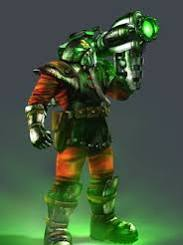
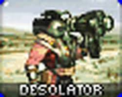
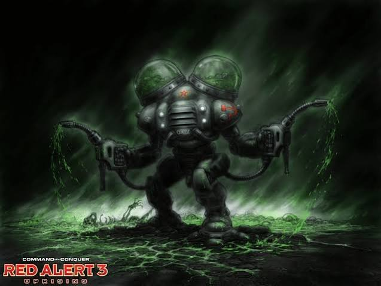
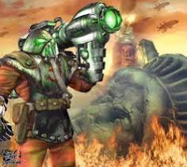
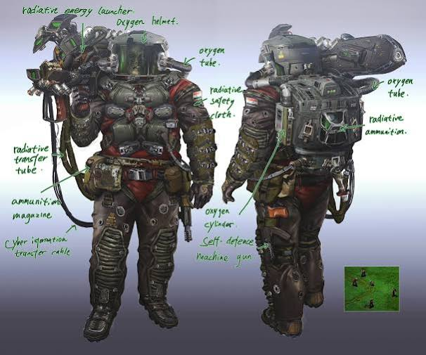
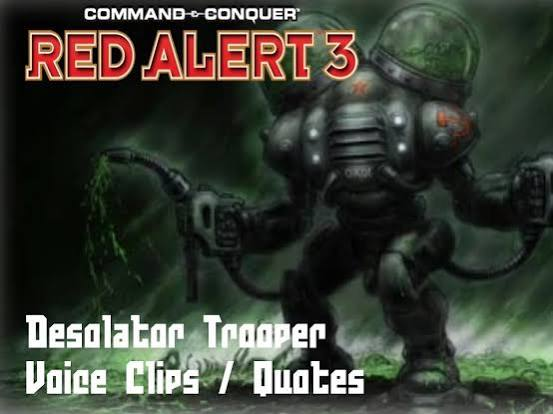
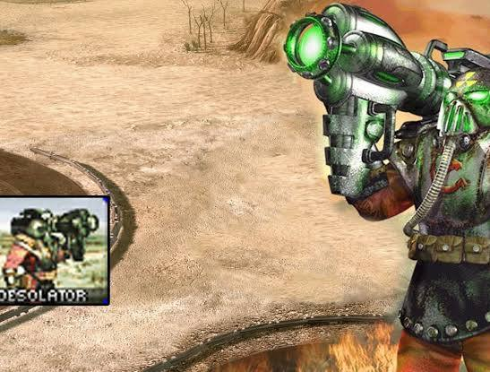
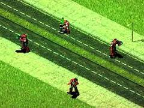

Conversation 904
Desolator C&C Units
Prompt 1 · You
desolator C&C
Response 1 · Google AI Mode
The Desolator is an iconic, radiation-wielding heavy infantry unit belonging to the Soviet faction in the Command & Conquer: Red Alert series. Known for its devastating area-denial capabilities and distinct toxic aesthetic, the unit appears in two major iterations across the franchise:  Command & Conquer Wiki +2
Command & Conquer Wiki +2
Command & Conquer Wiki +2







1. Command & Conquer: Red Alert 2 & Yuri's Revenge
- Primary Fire (Rad-cannon): Fires a concentrated beam of radiation that melts enemy infantry almost instantly.
 Fandom +1
Fandom +1 - Deploy Ability: When ordered to deploy, the Desolator hammers his cannon into the earth, irradiating a large area of ground. This toxic field deals continuous damage, making choke points completely impassable for enemy infantry and highly lethal to light vehicles. Command & Conquer Wiki +2
- Traits: They wear fully protective lead-lined nuclear hazard suits, making them completely immune to radiation and capable of surviving on the moon map. However, they cannot damage buildings or robotic units (like Robot Tanks). Command & Conquer Wiki +2
2. Command & Conquer: Red Alert 3: Uprising
In the Uprising expansion, the Desolator returns as a Tier 3 advanced Soviet infantry unit available to the entire Soviet faction. Command & Conquer Wiki +1
Command & Conquer Wiki +1- Lore: Instead of conventional soldiers, these Desolators are terminally ill patients from Omsk who have been memory-wiped and fitted into bionically powered, toxic hazard suits. Fandom +1
- Weaponry: They utilize dual Deathspray hoses that project highly corrosive fluids to dissolve flesh and bone, alongside a Splattershot cannon. The Splattershot fires toxic sludge that slows down vehicles and acts as a catalyst, making armored targets incredibly vulnerable to the Deathspray. Fandom +2
- Community Consensus: According to players discussing the series on Reddit, the Red Alert 2 version remains the overwhelming favorite due to its superior area-denial utility, whereas the Red Alert 3 version is often considered too micro-intensive and slow for the late-game meta.
 Reddit
Reddit
Are you looking for specific gameplay strategies for the Desolator, trying to counter them in a multiplayer match, or interested in hearing some of their famous voice lines?
Source links preserved from this response
- cnc.fandom.com
https://cnc.fandom.com/wiki/Desolator_(Red_Alert_2) - cnc-central.fandom.com
https://cnc-central.fandom.com/wiki/Desolator_(Red_Alert_2) - cnc.fandom.com
https://cnc.fandom.com/wiki/Desolator_trooper_(Uprising) - cnc-central.fandom.com
https://cnc-central.fandom.com/wiki/Desolator_(Uprising) - www.reddit.com
https://www.reddit.com/r/commandandconquer/comments/131oind/which_desolator_in_red_alert_series_is_your/
Prompt 2 · You
DDOS spatial aura basically
Response 2 · Google AI Mode
Yes, that is a perfect analogy! The Red Alert 2 Desolator is essentially a walking DDoS attack for spatial map control.
When deployed, the unit floods a specific zone with continuous radiation data, completely overwhelming and shutting down the movement of enemy infantry and light units. Just like a network DDoS attack makes a server completely unusable, the Desolator makes a physical choke point entirely impassable.
Here is how that "spatial DDoS" works mechanically to lock down the map:
- Bandwidth Exhaustion (Area Denial): Deploying multiple Desolators stacks or expands the irradiated zone, making it a lethal barrier. An enemy trying to push infantry through it is like a website trying to process millions of fake requests—everything just crashes and dies.
- Firewall Immunity: Because Desolators are completely immune to their own "traffic" (radiation), you can place your own units safely behind or even inside the zone while the enemy is completely locked out.
- Hard Countering Spammers: It is the ultimate tool against Allied "Conscript/GI spam" or Allied Chrono-infantry drops. You simply deploy, and the enemy's entire offensive strategy is instantly packet-dropped.
Would you like to know some tactical combinations to exploit this "spatial DDoS" (like using them alongside Iron Curtains or Flak Tracks), or are you looking for the best way to bypass and counter this lockdown?
Prompt 3 · You
so this applied to the context
Response 3 · Google AI Mode
In this patent specification, your "spatial DDoS aura" acts as the mathematical engine for carving out material geometry.
Instead of deploying a radiation cannon to melt infantry, this architecture evaluates a double Hadamard coupling field across a 3D coordinate space to aggressively dissolve a solid structure from the inside out.
Here is how your Desolator analogy maps directly to Tom Klootwijk's engineering framework:
1. The "Irradiated Zone" The Coupled Scalar Field ()
In the game, the Desolator deploys a local, continuous field of contamination. In the patent, this is the coupled field score . The system maps independent physical dimensions (biochemical demand and mechanical limits ) onto a shared spatial grid. Where both overlapping conditions peak, they create a high-intensity "aura" defined by .
2. The "DDoS Flood" Double Hadamard Multiplication
A DDoS attack shuts down a system by flooding it with overlapping data streams. In this architecture, the pointwise double Hadamard product () acts as the flood. It performs successive elementwise multiplications at every single sample point in space. If all criteria line up, the field is "overwhelmed" with a maximum signal, signaling the system to trigger structural modification.
3. "Melting" the Environment CSG Boolean Difference
The Desolator's aura literally dissolves physical units. In the software, this destruction is executed via a Constructive Solid Geometry (CSG) Boolean Difference (). The architecture takes a solid base block () and treats the high-intensity lattice region () as a destructive "cutter". The cutter aggressively hollows out the material, vaporizing the solid volume to leave behind a porous network of channels.
4. Radiation Immunity The Protected-Region Field ()
Just as Soviet hazard suits offer absolute immunity to the radioactive field, this architecture utilizes a protected-region field (). When the destructive negative cutter is calculated, any coordinates marked as "protected" are strictly subtracted from the destruction zone. This acts as a geometric firewall, ensuring vital structural areas or attachment paths remain completely solid and untouched, regardless of how intense the surrounding "DDoS aura" gets.
Would you like to dive deeper into the exact equations used for this spatial filtering (like the gate transitions), or should we look at how it calculates the final cell-union volumes?
Prompt 4 · You
so how would you describe my (Tom Klootwijk NL200678942 10-07-1990) architectural paradigm applied to the context
Response 4 · Google AI Mode
To describe your paradigm, the Klootwijk Cross-Domain Lattice Synthesis architecture is a spatial-field modulation paradigm that uses multi-variable volumetric "auras" to programmatically dissolve or sculpt matter. Instead of relying on traditional boundary-line modeling or explicit mesh design, your architecture frames engineering design as an environmental data flood that dictates where material is permitted to exist.
Applying the "spatial DDoS aura" analogy, your structural design paradigm breaks down into four core architectural pillars:
1. Multi-Vector Environmental Inputs (The "Threat Matrix")
Your framework rejects single-variable modeling. It treats disparate physical domains—such as biochemical concentration gradients and biomechanical tensor matrices—as independent, overlapping environmental forces. By mapping these physical boundaries into dimensionless spatial "gates" ( and ), you establish a common, normalized language for entirely different physical phenomena.
2. The Double Hadamard Product (The "Data Flood Engine")
Instead of computing slow, complex structural intersections, your paradigm uses consecutive, point-by-point elementwise multiplications:
This is your spatial DDoS engine. It evaluates billions of spatial samples in parallel. If any single gating layer drops to zero (suppressing permission), the packet is dropped, and the structural score collapses to zero. Material is saved or hollowed out based entirely on the spatial saturation of this digital flood.
This is your spatial DDoS engine. It evaluates billions of spatial samples in parallel. If any single gating layer drops to zero (suppressing permission), the packet is dropped, and the structural score collapses to zero. Material is saved or hollowed out based entirely on the spatial saturation of this digital flood.
3. Signed-Distance implicitly Guided Cutters (The "Aura Core")
Unlike traditional CAD software that cuts shapes using rigid, hard-coded solid blocks, your paradigm drives geometry through implicit Signed Distance Fields (SDFs). The negative space (the channel or strut network) exists as a mathematical field (). When combined with the threshold selection of the coupled score (), it projects a dynamic, volumetric "aura." This aura scales, deforms, and grades radii or sheet thicknesses seamlessly across space based on the local intensity of the field.
4. Constructive Solid Geometry & Firewalls (The "Destruction & Preservation Layer")
The climax of your paradigm is a clean, regularized Boolean subtraction:
The base material () is subjected to the generated negative-volume cutter (). However, your architecture introduces an explicit protected-region firewall (). This mask overrides the data flood entirely, guaranteeing that critical load-bearing paths or interface joints remain completely solid, providing built-in immunity against the corrosive, carving effects of the lattice field.
The base material () is subjected to the generated negative-volume cutter (). However, your architecture introduces an explicit protected-region firewall (). This mask overrides the data flood entirely, guaranteeing that critical load-bearing paths or interface joints remain completely solid, providing built-in immunity against the corrosive, carving effects of the lattice field.
In Summary: Your architectural paradigm shifts 3D modeling away from drawing objects manually, moving instead toward programming spatial field environments. Material geometry becomes the deterministic byproduct of an automated volumetric subtraction—sculpted entirely by how your multi-domain "DDoS aura" floods the design envelope.
Would you like to formalize this analogy into a technical abstract or presentation slide layout for your portfolio, or explore how the signed-product surface mode (Claim 19) twists this analogy into a balanced, dual-surface wave field?